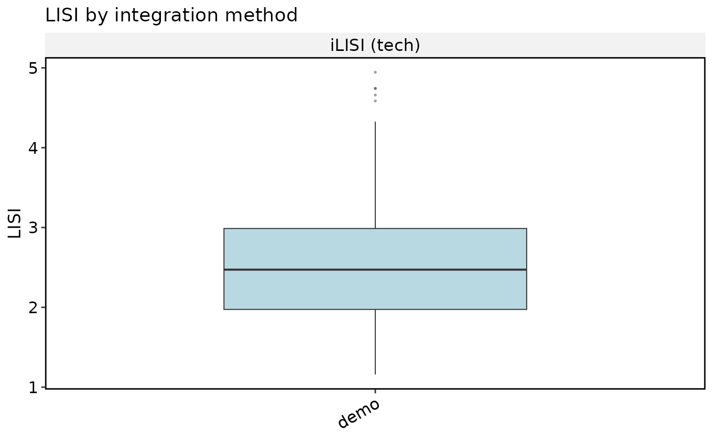

Compute per-cell Local Inverse Simpson's Index (LISI) scores from a
dimensional reduction and store them in the meta.data and tools slots
of a Seurat object.
Usage
RunLISI(
object,
reductions = NULL,
reduction = NULL,
dims = NULL,
label_colnames = NULL,
prefix = NULL,
tool_name = NULL,
perplexity = 30,
tol = 1e-05,
max_iter = 50,
knn_algorithm = c("auto", "brute_force", "clustered"),
cores = NULL,
max_dense_bytes = Inf,
overwrite = TRUE,
verbose = TRUE,
srt = NULL
)Arguments
- object
A
Seuratobject.- reductions
Character vector of dimensional reductions used to compute LISI. If
NULL,DefaultReduction()is used.- reduction
Deprecated alias of
reductions.- dims
Dimensions to use from the reduction. Default is
NULL, which uses all available dimensions.- label_colnames
Character vector of metadata columns used for LISI. If
NULL,RunLISI()will try to usesrt@misc[["integration_batch"]].- prefix
Prefix used for the stored LISI metadata columns. If
NULL, the reduction names are used.- tool_name
Name used to store detailed results in
srt@tools. Default is"LISI"when multiple reductions are provided, otherwisepaste0(prefix, "_LISI").- perplexity
Effective neighborhood size.
- tol
Tolerance used in the binary search for the target perplexity.
- max_iter
Maximum number of binary-search iterations.
- knn_algorithm
Exact nearest-neighbor strategy passed to
thisutils::compute_lisi().- cores
Number of LISI C++ worker threads.
NULL(the default) letsthisutils::compute_lisi()select the available hardware threads.- max_dense_bytes
Maximum estimated bytes allowed for LISI's dense input and C++ copy. Default is
Inf, which preserves unrestricted behavior.- overwrite
Whether to overwrite existing metadata columns.
- verbose
Whether to print the message. Default is
TRUE.- srt
Deprecated alias for
object; supply exactly one of the two. It will be removed in scop 1.0.0.
Examples
Restored example output generated on 2026-10-13 from SCOP 53ed7e08f. These historical examples have not been revalidated against the current release. Current usage and arguments are documented above.
data(panc8_sub)
set.seed(1)
demo_embedding <- matrix(
stats::rnorm(ncol(panc8_sub) * 5),
nrow = ncol(panc8_sub),
dimnames = list(colnames(panc8_sub), paste0("DEMO_", 1:5))
)
panc8_sub[["demo"]] <- SeuratObject::CreateDimReducObject(
embeddings = demo_embedding,
key = "DEMO_",
assay = SeuratObject::DefaultAssay(panc8_sub)
)
names(panc8_sub@reductions)
#> [1] "demo"
panc8_sub <- RunLISI(
panc8_sub,
reductions = "demo",
label_colnames = "tech",
perplexity = 10
)
#> ℹ [2026-10-13 17:07:44] Compute LISI scores from reduction "demo"
#> ✔ [2026-10-13 17:07:44] Stored LISI scores in metadata: "demo_tech_LISI"
IntegrationBenchmarkPlot(panc8_sub, plot_type = "box")
